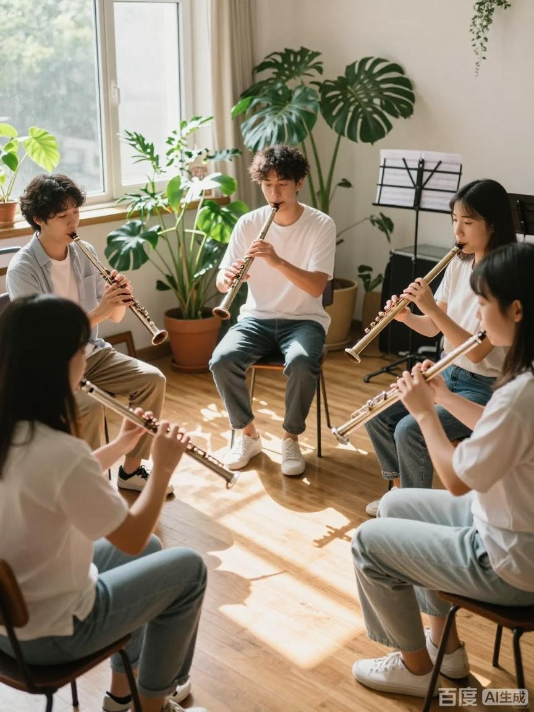

竹笛是我国经典传统吹管乐器，音色通透清亮，拥有千年的历史底蕴。笛子社团面向全校所有热爱民乐的同学开放，不设置乐器基础门槛。
社团会提供系统的竹笛教学，从持笛姿势、气息控制、基础指法，到简单乐曲练习、重奏合奏排练。我们定期组织内部小型演奏会、民乐赏析沙龙，同时选拔社员参加校级文艺晚会与艺术节展演。
社团内学长学姐会一对一带零基础新生，大家一起练习、交流，在音乐里收获友谊。无论你只是想把吹笛子当作课余爱好，还是希望登上舞台演奏，笛子社都欢迎你的加入。

← 返回招新主页
返回顶部